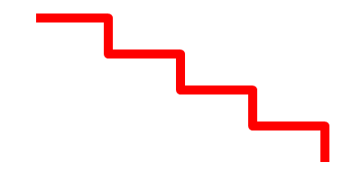

AddPathSegments()
语法
AddPathSegments(Segments$ [, Flags])概要
Add multiple segments described in string format to the vector drawing path. This command can be used to reproduce the path commands recorded with the PathSegments() command.
参数
Segments$ Specifies the path commands to execute.
The segment description consists of one-letter commands followed by the appropriate number of coordinates for the command. Values can be separated by whitespace or comma. Commands in uppercase interpret their arguments as absolute coordinates, the equivalent command in lowercase interprets its arguments as relative the most recent added path segment.M x y MovePathCursor() L x y AddPathLine() C x1 y1 x2 y2 x3 y3 AddPathCurve() Z ClosePath()In addition to this simplified segments syntax, the command also accepts path descriptions in the format defined by the SVG Tiny standard which contains some additional command letters.Flags (可选) This can be a combination of the following values: #PB_Path_Default : No special behavior (default value) #PB_Path_Relative : Interpret all coordinates as relative to the current path cursor
返回值
无.
示例
If OpenWindow(0, 0, 0, 400, 200, "VectorDrawing", #PB_Window_SystemMenu | #PB_Window_ScreenCentered) CanvasGadget(0, 0, 0, 400, 200) If StartVectorDrawing(CanvasVectorOutput(0)) AddPathSegments("M 40 20 L 120 20 L 120 60 L 200 60 L 200 100 L 280 100 L 280 140 L 360 140 L 360 180") VectorSourceColor(RGBA(255, 0, 0, 255)) StrokePath(10, #PB_Path_RoundCorner) StopVectorDrawing() EndIf Repeat Event = WaitWindowEvent() Until Event = #PB_Event_CloseWindow EndIf
参阅
PathSegments()
已支持操作系统
所有